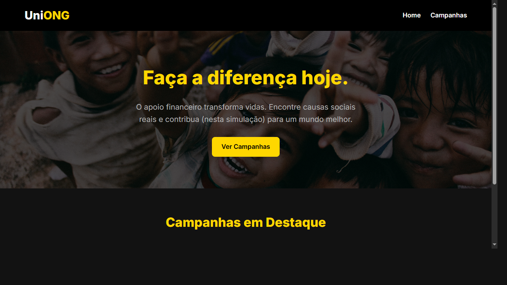
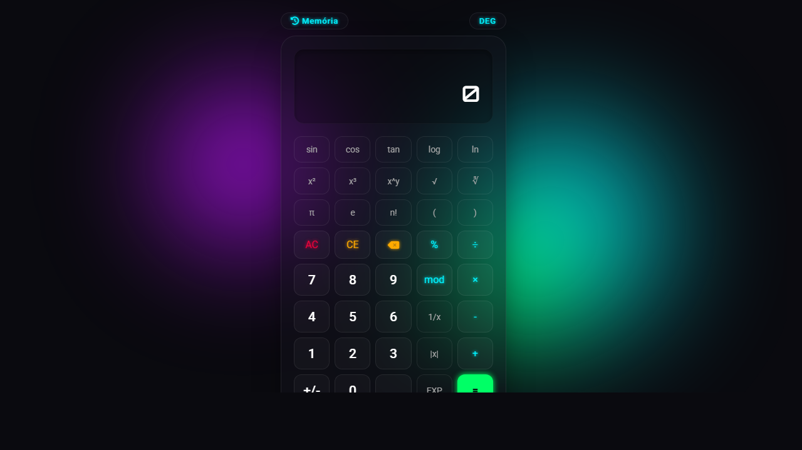

Olá, eu sou
João Victor Pereira
de Jesus Romero
Desenvolvedor em Formação
Sou um estudante de Análise e Desenvolvimento de Sistemas (ADS) com grande facilidade de aprendizado e paixão por tecnologia. Meu objetivo atual é conseguir uma oportunidade de estágio em TI para aplicar meus conhecimentos e evoluir profissionalmente.
Meus Projetos
O que eu construí até agora
UniONG
Uma plataforma web full-stack criada para conectar pessoas a organizações sociais (ONGs), facilitando o processo de doações. Possui listagem de campanhas e um simulador de fluxo de doação seguro e transparente.
Desenvolvido com apoio de Inteligência Artificial.

Calculadora Científica
Uma calculadora funcional com histórico integrado, desenvolvida com tecnologias web e design glassmorphism.
Sobre Mim
Conheça um pouco da minha trajetóriaJoão Victor
17 Anos
Cursando ADS
Tenho facilidade em aprender novas tecnologias e gosto de transformar ideias em projetos práticos. Meu interesse por tecnologia vem da vontade de entender como as coisas funcionam e de criar soluções que simplifiquem a vida das pessoas.
Atualmente, estou focado em concluir minha graduação em Análise e Desenvolvimento de Sistemas (ADS), buscando sempre evoluir minhas habilidades na área de desenvolvimento, seja no Front-end ou Back-end.
Estou à procura da minha primeira oportunidade como estagiário em TI, onde poderei contribuir com muita dedicação, energia e sede de aprendizado para a equipe.
Baixar CurrículoMinhas Habilidades
Tecnologias e competências que possuoHard Skills
Soft Skills
Experiência Profissional
Minha trajetória no mercadoJovem Aprendiz Administrativo
Emprego AtualAtuação no setor administrativo focado em rotinas de escritório, controle de documentos e planilhas. Esta primeira experiência profissional desenvolveu fortemente minhas soft skills.
Principais Aprendizados:
- Organização: Gestão eficiente de tempo e arquivos.
- Responsabilidade: Cumprimento rígido de prazos e tarefas atribuídas.
- Comunicação: Atendimento e interação clara com colegas de diversos setores.
- Trabalho em Equipe: Colaboração contínua para atingir metas do departamento.
Contato
Vamos trabalhar juntos?Informações de Contato
Estou sempre aberto a novas oportunidades e desafios profissionais na área de desenvolvimento. Se você procura um estagiário dedicado, envie uma mensagem!